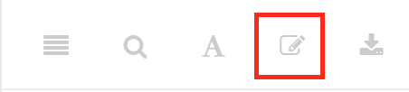
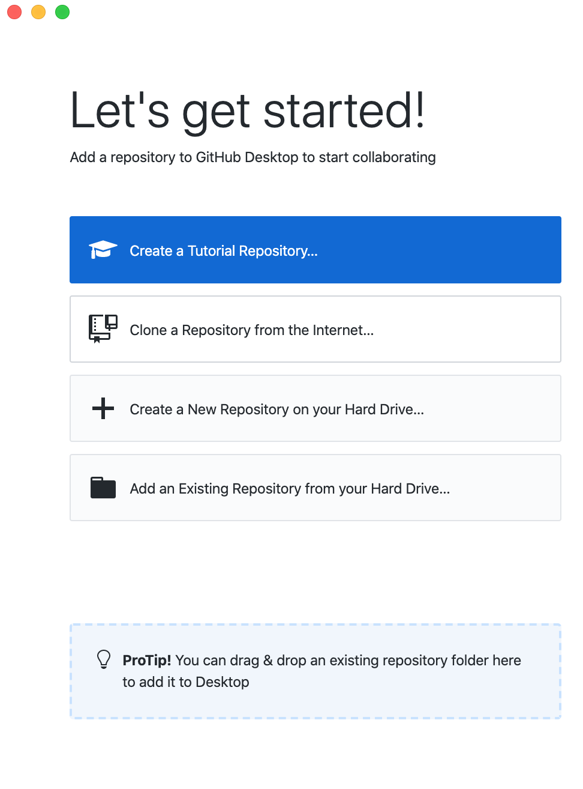
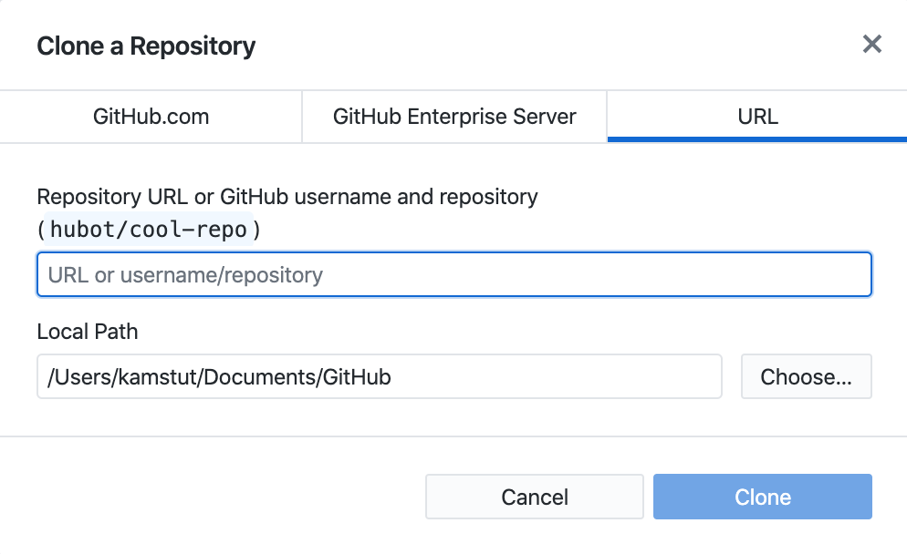
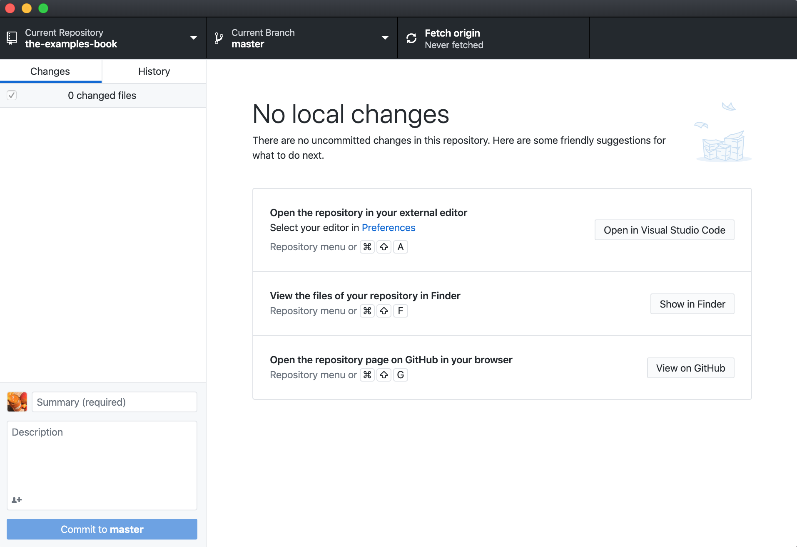

The Examples Book
Introduction
This book contains a collection of examples that students can use to reinforce topics learned in The Data Mine seminar. It is an excellent resource for students to learn what they need to know in order to solve The Data Mine projects.
How to contribute
Contributing to this book is simple:
Small changes and additions
If you have a small change or addition you’d like to make to the book, the easiest way to quickly contribute would be the following method.
- Navigate to the page or section that needs to be edited
Click on the “Edit” button towards the upper left side of the page: 
- You’ll be presented with the respective RMarkdown file. Make your modifications.
- In the “Commit changes” box, select the radio button that says Create a new branch for this commit and start a pull request. Give your pull request a title and a detailed description. Name the new branch, and click on “Propose file change”.
You’ve successfully submitted a pull request. Our team will review and merge the request shortly thereafter.
Larger changes or additions
If you have larger changes or additions you’d like to make to the book, the easiest way is to edit the contents of the book on your local machine.
Using git in the terminal
- Setup
gitfollowing the directions here. - Start by opening up a terminal and configuring
gitto work with GitHub. - Navigate to the directory in which you would like to clone the-examples-book repository. For example, if I wanted to clone the repository in my
~/projectsfolder, I’d first execute:cd ~/projects. - Clone the repository. In this example, let’s assume I’ve cloned the repository into my
~/projectsfolder. - Navigate into the project folder:
- At this point in time your current branch should be the
masterbranch. You can verify by running:
Note: The highlighted branch starting with "*" is the current branch.
or if you’d like just the name of the branch:
Create a new branch with whatever name you’d like, and check that branch out. For example,
fix-spelling-errors-01.- Open up RStudio. In the “Files” tab in RStudio, navigate to the repository. In this example, we would navigate to
/Users/kamstut/Documents/GitHub/the-examples-book. Click on the “More” dropdown and select “Set As Working Directory”. If you do not already have
renvinstalled, install it by running the following commands in the console:
- Restore the environment by running the following commands in the console:
- In order to compile this book, you must have LaTeX installed. The easiest way to accomplish this is to run the following in the R console:
In addition, make sure to install both
pandocandpandoc-citeprocby following the instructions here.- Modify the
.Rmdfiles to your liking. Click the “Knit” button to compile the book. The resulting “book” is within the “docs” folder.
Important note: If at any point in time you receive an error saying something similar to "there is no package called my_package, simply install the missing package, and try to knit again:
- To test the book out, navigate to the “docs” folder and open the
index.htmlin the browser of your choice. - When you are happy with the modifications you’ve made, commit your changes to the repository.
- You can continue to make modifications and commit your changes locally. When you are ready, you can push your branch to the remote repository (github.com).
- At this point in time, you can confirm that the branch has been succesfully pushed to github.com by navigating to the repository on github, and click on the “branches” tab:

- Next, create a pull request. Note that a “Pull Request” is a GitHub-specific concept. You cannot create a pull request using
git. Navigate to the repository https://github.com/thedatamine/the-examples-book, and you should see a message asking if you’d like to create a pull request:

Leave a detailed comment about what you’ve modified or added to the book. You can click on “Preview” to see what your comment will look like. GitHub’s markdown applies here. Once satisfied, click “Create pull request”.
At this point in time, the repository owners will receive a notification and will check and potentially merge the changes into the
masterbranch.
Using GitHub Desktop
- Setup GitHub Desktop following the directions here.
- When you are presented with the following screen, select “Clone a Repository from the Internet…”:
 3. Click on the “URL” tab:

- In the first field, enter “TheDataMine/the-examples-book”. This is the repository for this book.
- In the second field, enter the location in which you’d like the repository to be cloned to. In this example, the repository will be cloned into
/Users/kamstut/Documents/GitHub. The result will be a new folder calledthe-examples-bookin/Users/kamstut/Documents/GitHub. - Click “Clone”.
- Upon completion, you will be presented with a screen similar to this:

- At this point in time, your current branch will be the
masterbranch. Create a new branch with whatever name you’d like. For example,fix-spelling-errors-01. - Open up RStudio. In the “Files” tab in RStudio, navigate to the repository. In this example, we would navigate to
/Users/kamstut/Documents/GitHub/the-examples-book. Click on the “More” dropdown and select “Set As Working Directory”. - If you do not already have
renvinstalled, install it by running the following commands in the console:
- Restore the environment by running the following commands in the console:
- In order to compile this book, you must have LaTeX installed. The easiest way to accomplish this is to run the following in the R console:
In addition, make sure to install both
pandocandpandoc-citeprocby following the instructions here.- Modify the
.Rmdfiles to your liking. Click the “Knit” button to compile the book. The resulting “book” is within the “docs” folder.
Important note: If at any point in time you receive an error saying something similar to "there is no package called my_package, simply install the missing package, and try to knit again:
- To test the book out, navigate to the “docs” folder and open the
index.htmlin the browser of your choice. - When you are happy with the modifications you’ve made, commit your changes to the repository.
- You can continue to make modifications and commit your changes locally. When you are ready, you can publish your branch:

- Upon publishing your branch, within GitHub Desktop, you’ll be presented with the option to create a pull request:

- At this point in time, the repository owners will receive a notification and will check and potentially merge the changes into the
masterbranch.